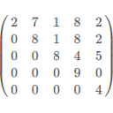
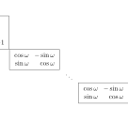

|
Inverting matrices |
Recent Posts all posts
|  |
Solving equations of upper triangular matrices |
Solving equations of lower unitriangular matrices |

|
Jordansche Normalform: 4x4 Matrizen |
|  |
Berechnung der euklidischen Normalform |
|
|
Eigenschaften von Abbildungsmatrizen |
|
|
Wie bestimme ich das Inverse einer Matrix? |
Wie bestimme ich die Basiswechselmatrix? |